如何在 SPSS 中查找和排除异常值
作者：Ruben Geert van den Berg，来自 SPSS Blog
- 方法一 - 直方图 (Histograms)
- 从数据中排除异常值 (Excluding Outliers from Data)
- 方法二 - 箱线图 (Boxplots)
- 方法三 - Z-分数（带报告）(Z-Scores (with Reporting))
- 方法三 - Z-分数（不带报告）(Z-Scores (without Reporting))
摘要
异常值基本上是指落在变量正常范围之外的值。但是，什么是“正常范围”？这具有主观性，可能取决于实质性知识和先前的研究。或者，也有一些经验法则。这些规则的主观性较小，但并不总是能做出更好的决策，我们接下来就会看到。
在任何情况下，我们通常都希望从数据分析中排除异常值。那么如何在 SPSS 中做到这一点呢？我们将通过 3 种方法向您展示，使用 life-choices.sav 数据集，部分数据如下所示。
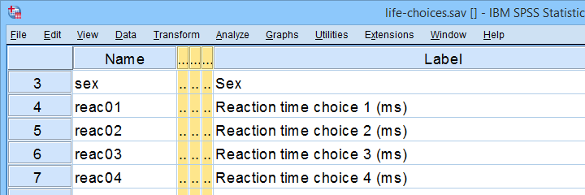 在本教程中，我们将查找这些反应时间变量的异常值。
在本教程中，我们将专门关注 reac01 到 reac05，即受访者在 5 次选择试验中的反应时间（以毫秒为单位）。
方法一 - 直方图 (Histograms)
让我们首先尝试通过对我们的 5 个反应时间变量运行一些快速直方图来识别异常值。 从 SPSS 菜单执行此操作的讨论见 在 SPSS 中创建直方图。 但是，一个更快的选择是运行下面的语法 (syntax)。
*创建包含 5 个反应时间变量的直方图的频率表。
frequencies reac01 to reac05
/histogram.结果
让我们仔细看看下面的 5 个直方图中的第一个。
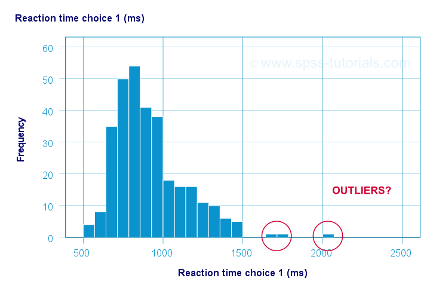
此变量的“正常范围”似乎从 500 毫秒到 1500 毫秒。 似乎有 3 个分数超出此范围。 那么这些是异常值吗？ 老实说，不同的分析师会在这里做出不同的决定。 就我个人而言，我只会排除 ≥ 2000 毫秒的分数。 那么，正确的做法是什么？ 其他变量呢？
从数据中排除异常值 (Excluding Outliers from Data)
从数据分析中排除异常值的正确方法是将它们指定为 用户缺失值 (user missing values)。 因此，对于反应时间 1 (reac01)，运行 missing values reac01 (2000 thru hi). 会将 2000 毫秒及以上的反应时间从所有数据分析和编辑中排除。 那么其他 4 个变量呢？
reac02 和 reac03 的直方图没有显示任何异常值。
对于 reac04，我们看到一些低异常值以及一个高异常值。 我们可以在其频率分布的底部和顶部找到这些值，如下所示。
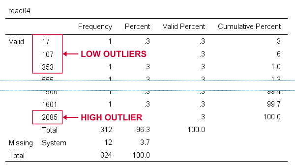 如果我们在直方图中看到任何异常值，我们可以查找相应频率表中的确切值。
我们可以通过运行 missing values reac04 (lo thru 400,2085). 一次性排除所有这些异常值。 顺便说一句，“lo thru 400”表示此变量中的lowest（最低）值（其最小值）through（直到）400 毫秒。
对于 reac05，我们看到几个低异常值和高异常值。 显而易见的事情似乎是运行类似 missing values reac05 (lo thru 400,2000 thru hi). 的东西。 但遗憾的是，这只会触发以下错误：
错误 # 4818 在第 46 列。文本：hi
指定的数值过多。
限制是三个单独的值或
一个值和一个值范围。
此命令的执行停止。
这里的问题是您不能在 SPSS 中指定低 和 高范围的缺失值。 由于这通常是您_需要_做的事情，因此这是当今 SPSS 中仍然存在的最大愚蠢行为之一。 解决此问题的一种方法是：
- RECODE 将整个低范围重编码为某个巨大的值，例如 999999999；
- 将原始值添加到此值的数值标签 (value label)；
- 仅指定包含 999999999 的高范围的缺失值。
下面的 syntax 正是这样做的，并重新运行我们的直方图以检查是否确实已正确排除所有异常值。
*将低异常值更改为 reac05 的 999999999。
recode reac05 (lo thru 400 = 999999999).
*将数值标签添加到 999999999。
add value labels reac05 999999999 '(Recoded from 95 / 113 / 397 ms)'.
*设置高缺失值的范围。
missing values reac05 (2000 thru hi).
*排除异常值后，重新运行频率表。
frequencies reac01 to reac05
/histogram.结果
首先，请注意，我们的 5 个直方图不再显示任何异常值； 它们现在已从所有数据分析和编辑中排除。 另请注意下面显示的 reac05 频率表的底部。
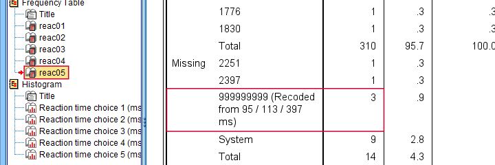 重编码和标记后的低异常值在“缺失值 (Missing)”下列出。
即使我们_不得不_重编码一些值，由于我们的数值标签，我们仍然可以准确地报告我们为此变量排除了哪些异常值。
在继续讨论箱线图之前，我想提及 2 个排除异常值的最差实践：
- 通过将异常值更改为系统缺失值 (system missing values) 来删除异常值。 这样做之后，我们不再知道我们排除了_哪些_异常值。 此外，我们也不知道_为什么_值是系统缺失的，因为它们没有任何数值标签。
- 因为个案 (cases) 具有 1 个或多个异常值而删除整个个案（通常是受访者）。 这样的个案通常具有我们完全可以用于分析其他（组）变量的大多数“正常”数据值。
遗憾的是，主管有时会强迫他们的学生走这条路。 如果是这样，SELECT IF 会从您的数据中永久删除整个个案。
方法二 - 箱线图 (Boxplots)
如果您运行了前面的示例，您需要在继续我们的第二种方法之前关闭并重新打开 life-choices.sav。
我们将创建一个箱线图，如 在 SPSS 中创建箱线图 - 快速指南 中所述：我们首先导航到 _A_nalyze（分析）  _D_escriptive Statistics（描述性统计） _E_xplore（探索），如下所示。
_D_escriptive Statistics（描述性统计） _E_xplore（探索），如下所示。
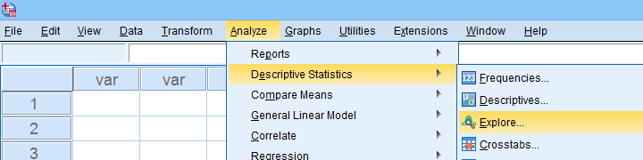
接下来，我们将填写对话框，如下所示。
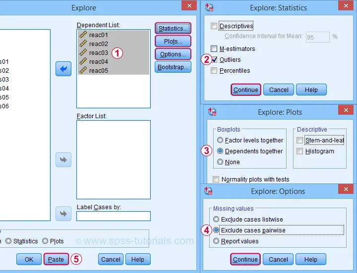
完成这些步骤将产生下面的语法。 让我们运行它。
*创建箱线图和异常值摘要。
EXAMINE VARIABLES=reac01 reac02 reac03 reac04 reac05
/PLOT BOXPLOT
/COMPARE VARIABLES
/STATISTICS EXTREME
/MISSING PAIRWISE
/NOTOTAL.结果
快速说明：如果您不确定如何解释箱线图，请先阅读 箱线图 - 初学者教程。
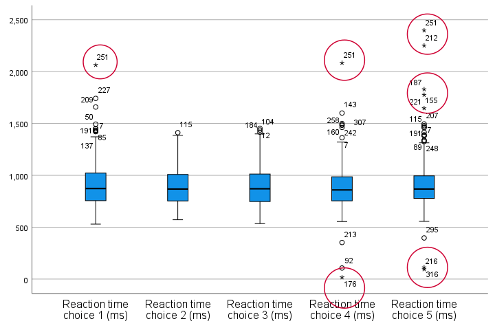
我们的箱线图表明所有 5 个变量都存在一些潜在的异常值。 但让我们忽略这些，只排除为 reac01、reac04 和 reac05 观察到的极端值 (extreme values)。
那么，我们应该准确地排除哪些值呢？ 我们在“极端值 (Extreme Values)”表中找到它们。 我喜欢将其复制粘贴到 Excel 中。 现在我们可以轻松地将根据我们的箱线图被认为是极端值的所有值加粗。
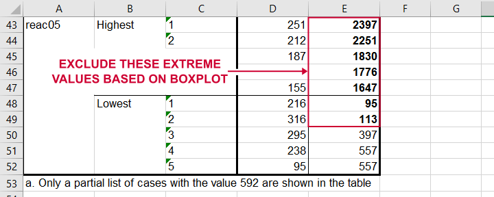 将“极端值 (Extreme Values)”表复制粘贴到 Excel 中，您可以轻松地将我们将要排除的确切异常值加粗。
最后，我们使用下面的语法将这些极端值设置为用户缺失值。 有关此例程的逐步说明，请查找 “从数据中排除异常值 (Excluding Outliers from Data)”。
*将低异常值的范围重编码为 reac05 的巨大值。
recode reac05 (lo thru 113 = 999999999).
*使用原始值标记新值。
add value labels reac05 999999999 '(Recoded from 95 / 113 ms)'.
*设置 reac01、reac04 和 reac05 的（范围）缺失值。
missing values
reac01 (2065)
reac04 (17,2085)
reac05 (1647 thru hi).
*重新运行箱线图并检查是否所有极端值都已消失。
EXAMINE VARIABLES=reac01 reac02 reac03 reac04 reac05
/PLOT BOXPLOT
/COMPARE VARIABLES
/STATISTICS EXTREME
/MISSING PAIRWISE
/NOTOTAL.方法三 - Z-分数（带报告）(Z-Scores (with Reporting))
排除异常值的常见方法是查找哪些值对应于高 z-分数。 同样，关于应将哪些 z-分数视为异常值，有不同的经验法则。 今天，我们确定 |z| ≥ 3.29 表示一个异常值。 这里的基本思想是，如果一个变量是完全 正态分布 的，那么只有 0.1% 的值会落在这个范围之外。
那么在 SPSS 中执行此操作的最佳方法是什么？ 好吧，前 2 个步骤超级简单：
- 我们将所有相关变量的 z-分数添加到我们的数据中
- 看看它们的最小值或最大值是否满足 |z| ≥ 3.29。
有趣的是，最好使用一个简单的 DESCRIPTIVES 命令来完成这两个步骤，如下所示。
*创建 reac01 到 reac05 的 z-分数。
descriptives reac01 to reac05
/save.
*检查 z-分数的最小值和最大值。
descriptives zreac01 to zreac05.结果
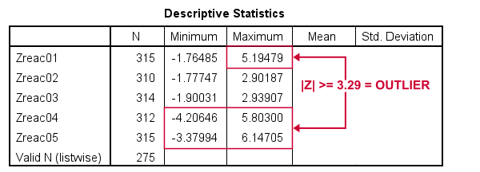 我们新计算的 z-分数的最小值和最大值。
此表的基本结论是：
- reac01 至少有 1 个高异常值；
- reac02 和 reac03 没有任何异常值；
- reac04 和 reac05 都至少有 1 个低异常值和 1 个高异常值。
但是哪些原始值对应于这些高绝对 z-分数？ 对于每个变量，我们可以运行 2 个简单的步骤：
- FILTER 过滤掉具有 |z| < 3.29 的个案（所有_非_异常值）；
- 在原始变量上运行频率表 - 现在仅包含_异常值_。
下面的语法正是这样做的，但使用 TEMPORARY 和 SELECT IF 来过滤掉非异常值。
*查找要排除的值。
temporary.
select if(abs(zreac01) >= 3.29).
frequencies reac01.
temporary.
select if(abs(zreac04) >= 3.29).
frequencies reac04.
temporary.
select if(abs(zreac05) >= 3.29).
frequencies reac05.
*保存输出，因为报告排除了哪些异常值需要表格。
output save outfile = 'outlier-tables-01.spv'.结果
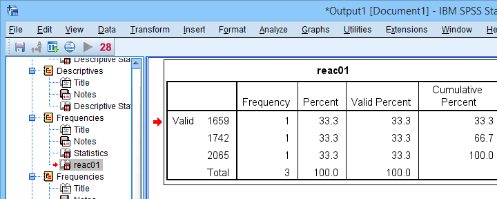 通过根据 z-分数过滤掉所有非异常值来查找异常值。
请注意，每个频率表仅包含少数几个异常值，其 |z| ≥ 3.29。 我们现在将使用下面的语法从所有数据分析和编辑中排除这些值。 有关这些步骤的详细说明，请参见 “从数据中排除异常值 (Excluding Outliers from Data)”。
*将低异常值的范围重编码为 999999999。
recode reac04 (lo thru 107 = 999999999).
recode reac05 (lo thru 113 = 999999999).
*使用原始值标记新值。
add value labels reac04 999999999 '(Recoded from 17 / 107 ms)'.
add value labels reac05 999999999 '(Recoded from 95 / 113 ms)'.
*设置 reac01、reac04 和 reac05 的（范围）缺失值。
missing values
reac01 (1659 thru hi)
reac04 (1601 thru hi )
reac05 (1776 thru hi).
*检查是否所有异常值现在确实是用户缺失值。
temporary.
select if(abs(zreac01) >= 3.29).
frequencies reac01.
temporary.
select if(abs(zreac04) >= 3.29).
frequencies reac04.
temporary.
select if(abs(zreac05) >= 3.29).
frequencies reac05.方法三 - Z-分数（不带报告）(Z-Scores (without Reporting))
我们可以大大加快我们刚才讨论的 z-分数方法，但这有一个代价：我们将无法准确地报告我们排除了哪些异常值。 如果您可以接受这一点，则下面的语法几乎可以完全自动化该作业。
*创建 reac01 到 reac05 的 z-分数。
descriptives reac01 to reac05
/save.
*如果 z-score >= 3.29，则将原始值重编码为 999999999。
do repeat #ori = reac01 to reac05 / #z = zreac01 to zreac05.
if(abs(#z) >= 3.29) #ori = 999999999.
end repeat print.
*添加数值标签。
add value labels reac01 to reac05 999999999 '(Excluded because |z| >= 3.29)'.
*设置缺失值。
missing values reac01 to reac05 (999999999).
*检查排除了多少异常值。
frequencies reac01 to reac05.结果
下面的频率表告诉我们，为 reac04 排除了 4 个具有 |z| ≥ 3.29 的异常值。
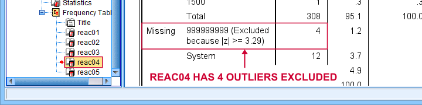 在“缺失值 (Missing)”下，我们看到排除的异常值的数量，但没有看到确切的值。
遗憾的是，我们不再能够准确地判断这些值对应于哪些原始值。
最终说明
到目前为止，我故意避免讨论应该将哪些值视为我们数据的异常值。 我认为，仅仅做出决定并完全明确地说明它比无休止的争论更具建设性。
因此，我盲目地遵循了箱线图和 z-分数方法的一些经验法则。 正如我之前警告的那样，这些并不总是能做出好的决定：对于手头的数据，低于 500 毫秒左右的反应时间不能认真对待。 但是，经验法则并不总是排除这些。
至于大多数数据分析，使用常识通常是一个更好的主意…